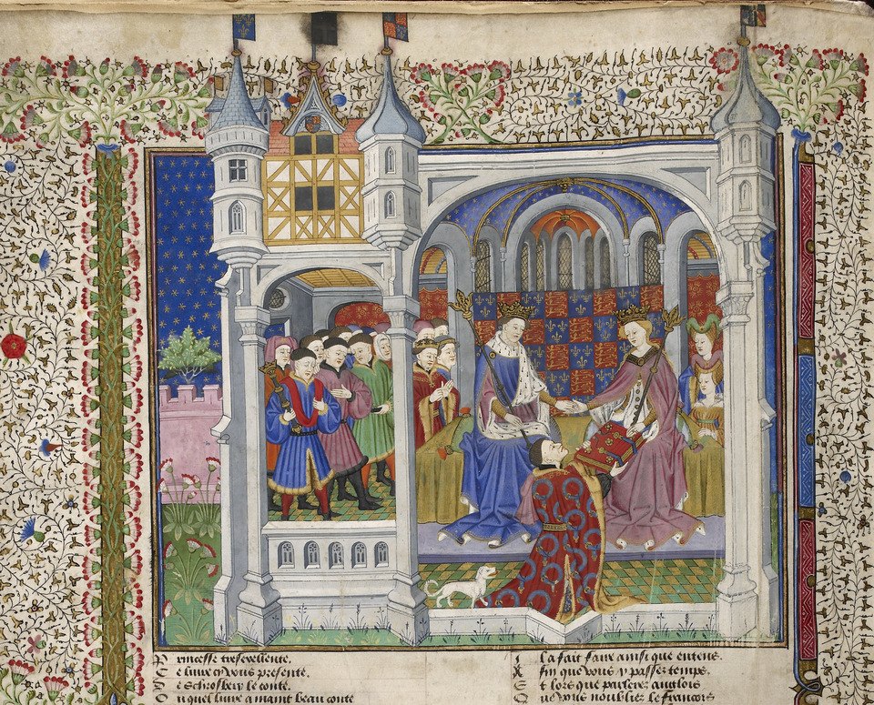

HoofdStuk 6.3

--------------------------------
De kruistochten
Naar Jeruzalem
Op 27 november 1095 kwamen honderden mensen samen bij het Franse stadje Clermont om te luisteren naar paus Urbanus II. De paus vertelde in een vurige toespraak dat Europa werd bedreigd door een afschuwelijk gevaar. Islamitische Turken hadden Jeruzalem en zijn omgeving al veroverd en dreigden nu het Byzantijnse rijk onder de voet te lopen. Om de Turken te stoppen had de Byzantijnse keizer de paus om hulp gevraagd. Daarom riep de paus in Clermont de christelijke Europeanen op tot een heilige strijd. Het ging om de bevrijding van het Heilige Land. Zo noemden christenen Jeruzalem en zijn omgeving, het gebied waar Jezus gepreekt zou hebben.
Jeruzalem was een heilige plaats voor christenen, omdat Jezus er zou zijn gestorven en begraven. Mohammed vanaf de Tempelberg een reis naar de hemel gemaakt. Na de oproep in Clermont riepen rondtrekkende monniken in heel Europa mensen op om mee te doen. Ze beloofden een volledige aflaat aan elke deelnemer die zou sterven. Deelnemers droegen het kruis als teken van hun heilige strijd. De gewapende tochten van christenen om land op niet-christenen te veroveren, werden kruistochten genoemd. Een jaar na de oproep van de paus begon de eerste kruistocht. Maar het was ook een heilige plaats voor joden en moslims. Voor joden was Jeruzalem de stad van de vroegere joodse tempel. Volgens moslims had Mohammed vanaf de Tempelberg een reis naar de hemel gemaakt. Na de oproep in Clermont riepen rondtrekkende monniken in heel Europa mensen op om mee te doen. Ze beloofden een volledige aflaat aan elke deelnemer die zou sterven. Deelnemers droegen het kruis als teken van hun heilige strijd. De gewapende tochten van christenen om land op niet-christenen te veroveren, werden kruistochten genoemd. Een jaar na de oproep van de paus begon de eerste kruistocht.
31 De Franse koning Lodewijk IX gaat op kruistocht, 1248 (tekening uit de 15e eeuw).
In het voorjaar van 1095 vroeg de Byzantijnse keizer paus Urbanus II om hulp tegen de Turken. Wat zij over hen vertelden maakte diepe indruk op de paus. In november 1095 riep hij mensen op tot de eerste kruistocht. Robert de Monnik deed verslag van de toespraak van de paus.
'Vanuit de omgeving van Jeruzalem en de stad Constantinopel heeft zich een afschuwelijk verhaal verspreid dat ook ons ter ore is gekomen. Namelijk, een volk uit het koninkrijk van de Perzen, een vervloekt volk... is de gebieden van de christenen binnengevallen en heeft deze met het zwaard, plundering en vuur ontvolkt... Het heeft kerken verwoest en andere kerken in beslag genomen voor hun eigen religie. Ze verwoesten de altaren nadat ze deze met hun onreinheid hebben bevuild. Ze besnijden de christenen en het bloed sprenkelen ze over de altaren. Wanneer ze mensen een vreselijke dood willen laten sterven, doorboren ze hun navels en nadat ze hun darmen hebben uitgerukt, binden ze deze aan een paal vast. Vervolgens leiden ze met slaag het slachtoffer rond totdat hij met zijn uitpuilende ingewanden voorover valt. Anderen binden ze aan een paal vast en doorboren hen met pijlen... Op wie anders dan jullie rust de taak om deze misdaden te wreken en het gebied terug te winnen?'
'Gods vijanden houden nu de stad Jeruzalem in het centrum van de wereld gevangen. De stad is overgeleverd aan hen die God niet kennen. Daarom verlangt ze ernaar bevrijd te worden en daarom zal ze niet ophouden jullie te smeken haar te hulp te komen... Daarom, onderneem deze reis om jullie zonden weg te wassen en weet je verzekerd van de onuitwisbare roem van het Koninkrijk der Hemelen.'
Naar: Dana C. Munro, Urban and the Crusades. Translated and Reproduced from the Original Sources of European History, Vol. 1, no. 2, (Philadelphia 1895). In: B. Hellemans, J. Raaijmakers en C. van Rhijn, Ooggetuigen van de middeleeuwen (Amsterdam 2005).
Terug